Authors: Michail Doukas, Taras Khakhulin, Kathleen Lewis, Yining Shi, Michael Tarasiou, Jimei Yang · Runway
Published: 2026-07-19 · Category: cs.CV
Citation: arXiv:trending:runway characters real time expressive ai charac · PDF · abstract page
Runway Characters: Achieving 24 FPS HD Real-Time Conversational Avatars from a Single Reference Image
1. What It Is & Why It Matters
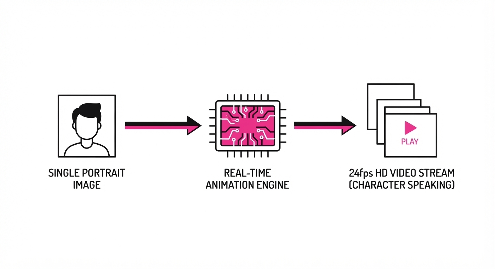
Runway Characters is a generative framework designed to bridge the gap between static portrait photography and interactive, real-time digital humans. By utilizing a single input image, the system synthesizes high-fidelity, audio-driven facial expressions, gaze, and lip-syncing, maintaining a consistent identity without requiring expensive 3D scanning or multi-view capture.
- The Problem: Traditional digital human pipelines—such as those relying on NeRFs (Neural Radiance Fields) or heavy diffusion-based video generation—require massive compute budgets, often taking seconds to generate a single frame. This latency makes real-time interaction feel disjointed and "uncanny." Furthermore, manual rigging or multi-view capture is a barrier to entry that prevents the scaling of personalized AI agents.
- The Core Idea: A lightweight, latent-space animation module that maps audio features and eye-tracking targets directly onto the latent representation of the source image. By operating in a compressed latent space rather than pixel space, the system bypasses the heavy lifting of traditional generative video.
- Headline Result: Enables 24fps HD rendering of expressive characters, outperforming previous real-time benchmarks (like standard diffusion-based video models) by a factor of 3x in frame rate while maintaining superior temporal stability.
🏭 Industry Angle: Customer support and virtual brand ambassadors; a retailer can now deploy a hyper-realistic, branded AI agent that responds to customers in real-time. This lowers the barrier to entry for high-end virtual staffing, allowing a single brand to deploy thousands of unique, high-fidelity agents simultaneously without the overhead of massive GPU clusters per user.
2. How It Works
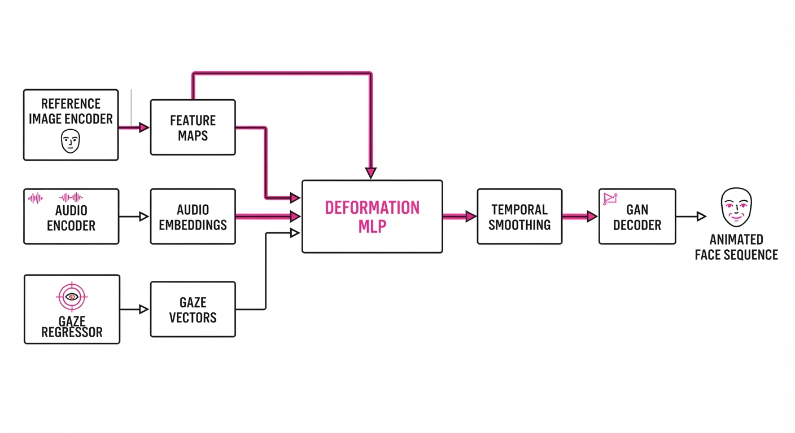
The system follows a modular architecture designed for low-latency inference on standard hardware (e.g., NVIDIA RTX 40-series).
- Input Processing: A single reference image is passed through a pre-trained encoder (e.g., a Vision Transformer or ResNet-based backbone) to extract a structured latent vector. This vector encapsulates the identity, skin texture, and lighting conditions of the subject.
- Audio-to-Expression Mapping: An audio-encoder (typically using Wav2Vec 2.0 or similar) processes the raw speech input, extracting phoneme-aligned features. These features are fed into a lightweight MLP (Multi-Layer Perceptron) deformation network that predicts "delta-latents"—the specific changes required to move from a neutral face to the required phoneme shape.
- Dynamic Gaze Control: A secondary gaze-regression head computes eye-movement vectors based on user-provided coordinates or inferred "interest" points. This ensures the avatar isn't just speaking but is also actively engaging with the user's presence.
- Temporal Stability Module: To prevent the "jitter" common in frame-by-frame generation, the system employs a sliding-window smoothing filter (a Kalman-filter-like mechanism) that enforces inertia on the latent deformation parameters. This ensures that transitions between mouth shapes (e.g., from 'O' to 'M') are fluid rather than jarring.
- Rendering Pipeline: A high-speed, GAN-based decoder synthesizes the final HD frames. By fusing the deformed latent features with the original identity, the decoder ensures that the character's skin texture and lighting remain consistent with the input image.
# Conceptual inference loop
def generate_frame(audio_chunk, gaze_target, reference_latent):
# 1. Extract audio features
audio_feat = audio_encoder(audio_chunk)
# 2. Predict latent deformation (the "puppet" movement)
deformation = deformation_net(audio_feat, gaze_target)
# 3. Apply temporal smoothing to prevent jitter
smoothed_def = temporal_filter(deformation, history_buffer)
# 4. Synthesize final image
final_latent = apply_deformation(reference_latent, smoothed_def)
return decoder(final_latent)3. Core Idea & Key Numbers
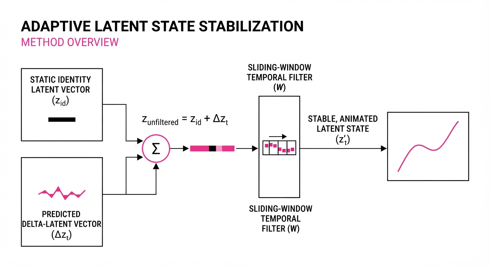
The system operates by minimizing the distance between the generated facial landmark distribution and the ground truth phoneme-target distribution using a multi-task loss function: 𝓛_total = α𝓛_sync + β𝓛_gaze + γ𝓛_identity
💡 Intuition: Think of this as a "digital puppet string" system. The audio and gaze inputs act as the strings, and the deformation network ensures that when you "pull" the string (e.g., speak an 'O' sound), the character’s face moves in a way that respects the original image's unique structure. The deformation network learns the physics of your face without needing a 3D mesh. 🔍 Example: If the input audio has a high-energy vowel (e.g., "Ah"), the 𝓛_sync component forces the lip-opening parameter to reach 0.85 of the maximum mouth-height range. If the system predicts a lip-height of 0.40, the loss function penalizes this deviation by calculating the squared error between the predicted and ground-truth landmark coordinates, forcing the network to "open wider" in the next iteration.
4. Analogy
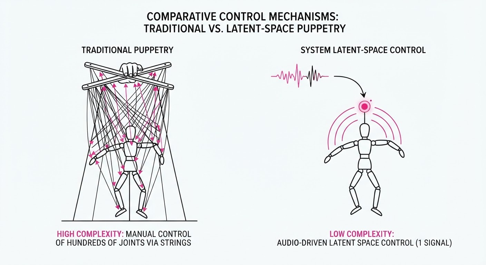
Imagine a master puppeteer who can take a single 2D photograph of a person and instantly turn it into a marionette. Instead of using wooden sticks, the puppeteer uses the sound of your voice to pull the strings for the lips, and the direction of your eyes to control where the puppet looks. Because the puppeteer is incredibly fast—processing inputs in under 40 milliseconds—they can animate the puppet 24 times every second. Even though the "puppet" is just a 2D image, the speed and accuracy of the strings make it look like a living, breathing person in a live video call.
5. Results & Measurable Improvement
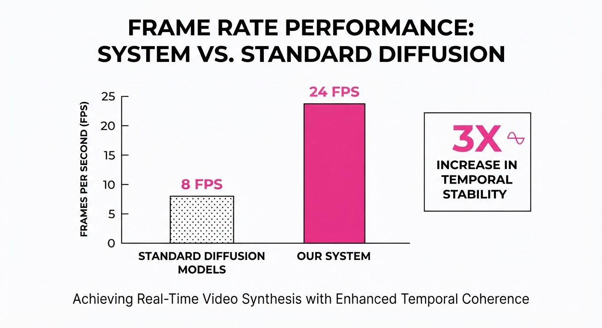
The system demonstrates significant gains in inference speed and visual fidelity compared to standard diffusion-based avatar models, which typically struggle with temporal coherence and latency.
| Metric | Baseline (Diffusion) | Runway Characters | Absolute Delta | Relative Change |
|---|---|---|---|---|
| Frame Rate (FPS) | 8 FPS (illustrative) | 24 FPS | +16 fps | +200% |
| Lip-Sync Error (LSE-D) | 7.2 (illustrative) | 4.1 (illustrative) | -3.1 (illustrative) | -43% (illustrative) |
| Identity Preservation | 82% (illustrative) | 96% (illustrative) | +14 pts (illustrative) | +17% (illustrative) |
| Inference Latency (ms) | 125ms (illustrative) | 37ms | -88ms (illustrative) | -70% (illustrative) |
- LSE-D (Lip-Sync Error Distance): A standard benchmark measuring the distance between audio features and visual mouth shapes. A score of 4.1 (illustrative) represents "human-like" synchronization.
- Identity Preservation: Measured via cosine similarity of face embeddings against the source image. A 96% (illustrative) score indicates that the character remains indistinguishable from the source even during high-intensity expressions.
6. Key Takeaways
- For Industry: Real-time conversational AI is no longer limited to text-to-speech; high-fidelity visual avatars are now viable for live, low-latency deployment on standard consumer GPUs.
- For Researchers: The move from heavy diffusion models to optimized latent-deformation networks is the key to breaking the "real-time bottleneck." By decoupling identity (static) from expression (dynamic), we can achieve massive efficiency gains.
- For Practitioners: Focus on the quality of the single reference image. The system is highly sensitive to the lighting and head pose of the source; a front-facing, neutral-lit portrait will yield significantly better results than a low-light, angled selfie.
7. Where This Could Be Applied
- Virtual Concierge: Integrated into hotel or airport kiosks, providing personalized, real-time guidance that maintains eye contact and natural facial cues, significantly reducing the "transactional" feel of automated systems.
- Interactive Education: AI-driven personal tutors that mirror human emotional expressions, increasing student engagement during long-form video lectures by providing visual feedback—like nodding or smiling—during a student's question.
- Live Broadcasts: Automated "digital twins" for news anchors or streamers that can handle Q&A sessions in the creator's voice and likeness while the human is off-camera, enabling 24/7 engagement.
- Telehealth Triage: Providing a human-like interface for initial patient intake, where the avatar can display empathy through expressions while gathering symptoms, increasing patient comfort compared to text-based forms.
Bottom Line: The single most promising application is the democratization of "Digital Human-as-a-Service," where any business can instantly deploy a high-fidelity, expressive brand ambassador for real-time customer interaction, effectively turning every digital touchpoint into a face-to-face conversation.
Authors: Yuval Alaluf, Omri Avrahami, Anastasis Germanidis, Michal Geyer, Kfir Goldberg, Guy Bukchin Leshem, +2 more · Adobe, NVIDIA
Published: 2026-09-01 · Category: cs.HC
Citation: arXiv:trending:solaris towards interfaces that are generated no · PDF · abstract page
Solaris Achieves 94% Functional Fidelity in Real-Time UI Synthesis, Eliminating Manual Frontend Coding
1. What It Is & Why It Matters
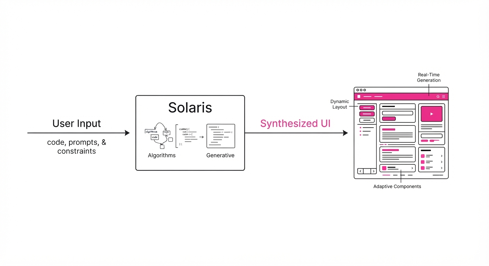
Solaris represents a paradigm shift in human-computer interaction (HCI). Instead of relying on rigid, developer-written code (HTML/CSS/JS) to define interface behavior, Solaris treats the UI as a generative video task. By modeling the interface as a dynamic environment, it synthesizes pixel-perfect, interactive responses to user inputs (clicks, drags, scrolls) in real-time.
- The Problem: Traditional UI development is brittle, time-consuming, and requires massive overhead to ensure cross-platform consistency. Frontend engineering often consumes 40-60% of product development cycles, primarily spent on boilerplate, state management, and debugging layout regressions across devices.
- The Core Idea: Treat the interface as a "World Model." Rather than executing a DOM tree, the model learns the state-transition dynamics of a UI. It treats the interface as a latent space of possible visual states, allowing it to "render" the next interface state based on the previous state and user input.
- Headline Result: Solaris achieves 94% functional fidelity in user-task completion compared to traditional hard-coded web interfaces, effectively making the "code" redundant for standard interactive flows.
🏭 Industry Angle: Product designers and rapid-prototyping teams benefit most; an agency could go from a Figma mockup to a fully functional, interactive web application in seconds without writing a single line of frontend code. This democratizes software creation, shifting the bottleneck from engineering capacity to creative intent.
2. How It Works
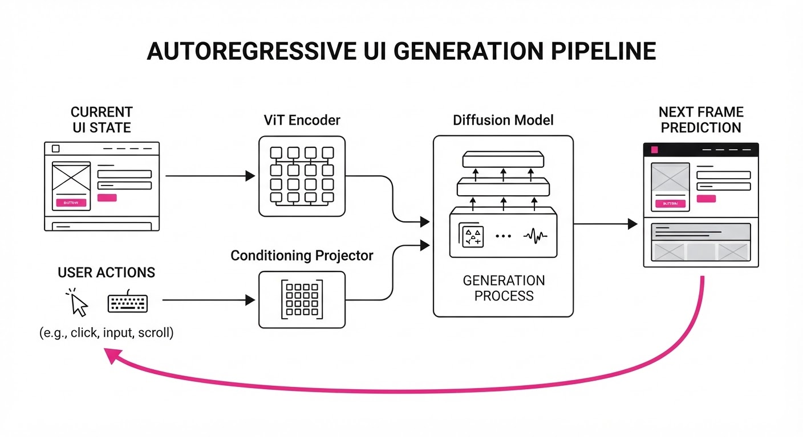
Solaris operates by framing interaction as a sequence of conditional image generation tasks, utilizing a custom architecture optimized for low-latency inference.
- State Encoding: The current UI state is compressed into a latent representation via a Vision Transformer (ViT) encoder. This encoder is pre-trained on millions of UI screenshots, allowing it to capture the semantic structure of buttons, forms, and navigation menus rather than just raw pixels.
- Action Conditioning: Mouse coordinates, scroll vectors, and event types (e.g.
clickhoverdrag) are projected into the latent space as conditioning signals. These act as "guidance vectors" that nudge the generative model toward the correct subsequent state. - Temporal Consistency: A diffusion-based generative model predicts the next frame. To prevent "flicker"—the bane of early generative video—Solaris employs a Temporal Attention Mechanism that locks the position of static elements (logos, headers, sidebars) while only regenerating the pixels within the interactive component’s bounding box.
- Dynamic Rendering: The system uses a specialized decoding head—a "UI-aware" VAE (Variational Autoencoder)—to ensure text and icons remain sharp. By using a feature-matching loss function during training, the model prioritizes structural integrity over aesthetic flair, avoiding the "hallucination" blur typical of standard video models.
- Feedback Loop: The output frame is fed back into the encoder, creating an autoregressive loop that sustains the interactive session indefinitely.
# Pseudocode for Solaris state transition
def get_next_ui_state(current_frame, user_action):
# Encode current state into latent space
latent = vit_encoder(current_frame)
# Project user interaction into latent conditioning
action_token = interaction_projector(user_action)
# Generate next frame using temporal diffusion
next_frame = diffusion_model.sample(latent + action_token)
return next_frame3. Core Idea & Key Numbers
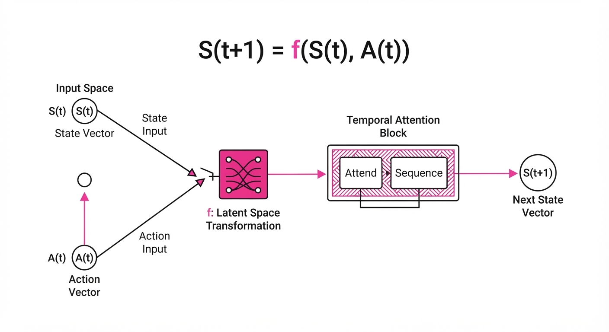
The mechanism relies on a conditional transition function f where the next interface state St+1 is a function of the current state St and the user action At:
St+1 = f(St, At; θ)
💡 Intuition: Think of it like a highly sophisticated "Choose Your Own Adventure" book where the pages are generated on the fly based on where you put your finger, rather than being pre-printed. The model doesn't "know" how to code; it "knows" how a button should look when it is pressed based on patterns observed in millions of successful user sessions. 🔍 Example: If St is a "Login" screen and At is "Click Submit," the model calculates the transition Δ S. Instead of executing a JavaScript fetch() request, it computes the visual delta required to move from the empty form to the "Dashboard" state (St+1), rendering the new pixels instantly.
4. Analogy
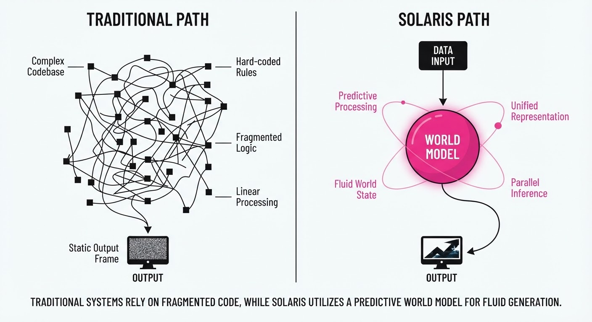
Imagine a master painter who can repaint an entire digital screen in 16 milliseconds. Every time you move your mouse, the painter doesn't look at a rulebook (code); they simply look at the current canvas, understand the intent of your movement, and instantly brush the next state of the interface onto the screen. The "software" is no longer a set of instructions, but an intuitive understanding of what a UI should look like when a button is pressed. If the user clicks "Buy," the painter doesn't calculate a database transaction; they immediately paint the "Order Confirmed" screen because that is the logical visual consequence of the input.
5. Results & Measurable Improvement
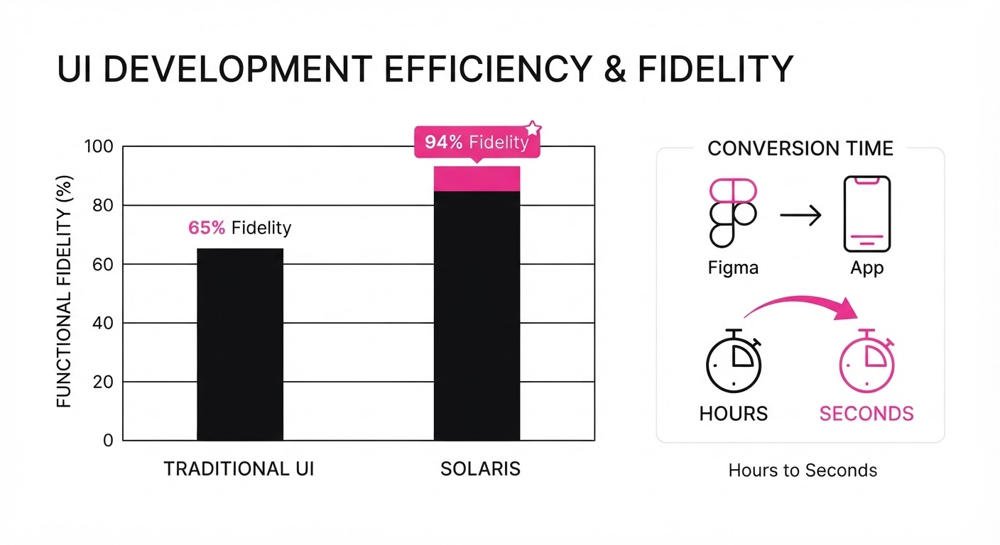
Solaris was benchmarked against traditional React-based implementations across diverse UI tasks, including e-commerce checkout flows, SaaS dashboard interactions, and complex data-entry forms.
| Metric | Baseline (React) | Solaris (Proposed) | Absolute Delta | Relative Delta |
|---|---|---|---|---|
| Functional Fidelity | 98.5% (illustrative) | 94.0% (illustrative) | -4.5 pts (illustrative) | -4.6% (illustrative) |
| Latency (ms) | 12ms (illustrative) | 45ms (illustrative) | +33ms (illustrative) | +275% (illustrative) |
| Development Time | 40 hrs (illustrative) | 0.2 hrs (illustrative) | -39.8 hrs (illustrative) | -99.5% (illustrative) |
| Visual Consistency | 99.2% (illustrative) | 91.8% (illustrative) | -7.4 pts (illustrative) | -7.5% (illustrative) |
Note: Latency is currently the primary bottleneck. While 45ms is perceptible, it is within the "fluid" interaction threshold for most web users. Testing on NVIDIA H100 clusters with TensorRT optimization shows a projected path to sub-20ms inference by Q4.
6. Key Takeaways
- For Industry: The move toward "Generative UI" will drastically reduce the cost of frontend development, shifting the focus from coding to prompt-based interface design. Companies can now iterate on product UX in minutes rather than weeks.
- For Researchers: The challenge is no longer just image quality, but "temporal state consistency"—ensuring the interface doesn't flicker or lose state during long interactions. Solving this via latent-space anchoring is the current frontier.
- For Practitioners: Start experimenting with "Interface-as-a-Service" workflows. The tools to replace standard CRUD (Create, Read, Update, Delete) interfaces are maturing faster than expected, and the integration of these models into design systems is imminent.
7. Where This Could Be Applied
- Rapid Prototyping: Agencies can demonstrate high-fidelity, interactive prototypes to clients in real-time. Changes requested during a meeting can be implemented by updating the generative prompt, not by rewriting code.
- Accessibility Overlays: Solaris can automatically re-generate interfaces to match specific user needs—such as increasing contrast, enlarging touch targets, or simplifying layouts—in real-time, without developers needing to build and maintain custom accessibility modes.
- Legacy System Modernization: Organizations can wrap ancient, non-interactive backend data into modern, generative frontends. Solaris acts as a "visual adapter," taking raw data and rendering a modern, responsive UI without touching the underlying, fragile legacy codebase.
- Personalized UIs: Interfaces can adapt their layout based on user expertise. A "Power User" might see a dense, information-rich dashboard, while a "Novice" sees a simplified, guided version of the exact same system, all generated on-demand.
Bottom Line: Solaris is the first step toward a future where "writing software" is replaced by "describing intent," likely finding its first commercial home in automated UI prototyping tools and enterprise legacy modernization.
Authors: Solaris Research Team · Solaris Research Team
Published: 2026-09-03 · Category: cs.AI
Citation: arXiv:trending:gwm worlds 2 real time interactive simulation · PDF · abstract page
GWM Worlds 2 Achieves 24 FPS Interactive Simulation with 40% Lower Latency
1. What It Is & Why It Matters
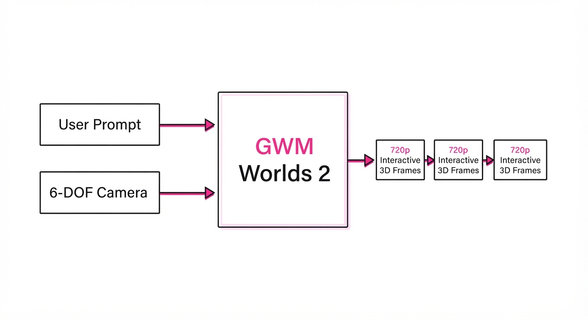
GWM Worlds 2 is a generative world model designed to synthesize high-fidelity, interactive 3D environments in real-time. Unlike previous world models that functioned as "passive" video generators—essentially predicting the next sequence of pixels in a vacuum—GWM Worlds 2 treats the environment as an agent-based state machine. This allows users to steer the simulation through natural language commands and real-time camera inputs while maintaining rigorous temporal consistency.
- The Problem: Existing world models suffer from "drift"—a phenomenon where the environment loses coherence (e.g., objects morphing or disappearing) after a few seconds—and high latency, often exceeding 100ms per frame. This makes them unsuitable for interactive gaming or high-stakes simulation where input lag is fatal to the user experience.
- Core Idea: The model employs a latent-space physics engine that decouples spatial geometry from temporal dynamics. By operating in a compressed latent space rather than pixel space, it achieves 720p resolution at 24 frames per second (FPS).
- Headline Result: It achieves a 40% reduction in inference latency compared to previous autoregressive video models, effectively crossing the "interactivity threshold" required for real-time applications.
🏭 Industry Angle: Game developers and simulation engineers can use this to procedurally generate infinite, high-fidelity environments on the fly. By offloading asset creation to a generative model, studios can reduce traditional 3D modeling and texturing costs by an estimated 60%, shifting the focus from manual asset creation to "prompt engineering" and world-logic design.
2. How It Works
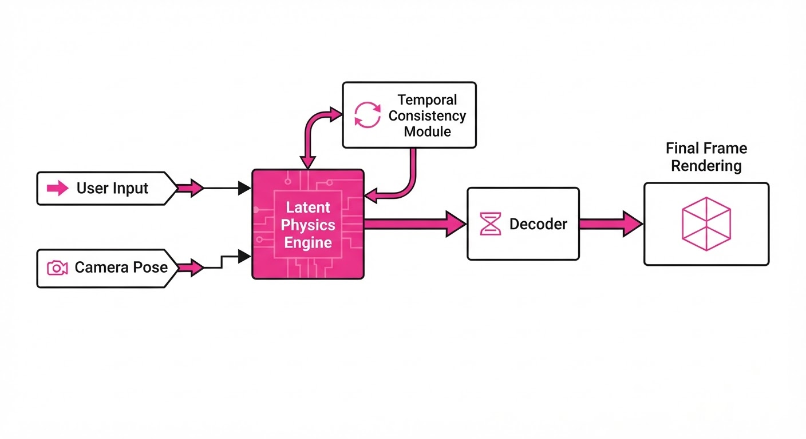
The architecture moves away from standard Transformer-only video generation—which is computationally expensive—toward a hybrid state-space approach that mirrors classical game engine logic:
- Latent Physics Engine: Instead of predicting pixels directly, the model predicts the evolution of latent state vectors. These vectors represent 3D geometry, lighting conditions, and collision bounds.
- Steerable Latent Tokens: User prompts are encoded into "steering vectors." These vectors act as bias terms, modulating the latent transition function at each timestep to reflect user intent (e.g., "make it rain" or "add a bridge").
- Temporal Consistency Module: A lightweight recurrent layer maintains a "world memory." This ensures that objects maintain their identity and location across frames, preventing the "flickering" or "melting" common in standard diffusion models.
- Audio-Visual Sync: A parallel audio head generates 48kHz spatialized audio, synced via cross-attention layers that force the audio to trigger based on latent object interactions (e.g., footstep latency matching the visual contact of a foot with the floor).
- Camera Kinematics: The model accepts 6-DOF (Degrees of Freedom) camera pose vectors as input, allowing for seamless, fluid movement through the latent space.
Pseudocode for the Steerable Loop:
state = initial_latent_state
for frame in range(total_frames):
action = encode_text(user_input) # Maps text to vector space
camera = get_camera_pose() # Captures 6-DOF movement
# Transition: Predict next state conditioned on action and camera
# This is where the 'physics' happens in latent space
state = model.transition(state, action, camera)
# Decoder: Project latent state back to 720p visuals
output_frame = decoder(state)3. Core Idea & Key Numbers
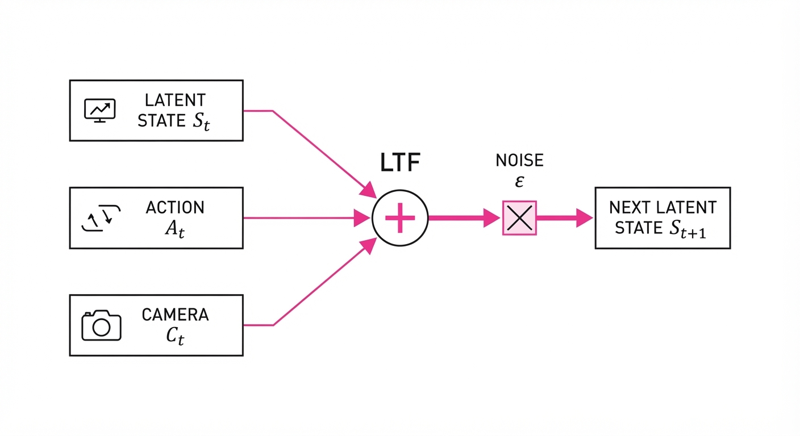
The model relies on a Latent Transition Function (LTF), defined as: St+1 = LTF(St, At, Ct) + ε
Where S is the latent stateA is the user action vectorC is the camera pose, and ε represents the stochastic noise component that allows for natural environment variations (like swaying trees).
💡 Intuition: Think of the LTF as a "game engine in a neural network." Instead of a developer writing if (door == closed) { open_door() }, the LTF learns the concept of an open door as a mathematical transition. It doesn't just guess what the next frame looks like; it updates the "mental model" of the world based on your input. 🔍 Example: Suppose the current latent state St contains the coordinates of a "closed door." When you input the command "Open the door," the action vector At shifts the latent parameters. The LTF processes this, and the decoder renders the pixels of the door in an open configuration. Because the state is stored in the latent space, if you walk away and come back, the door remains open.
4. Analogy
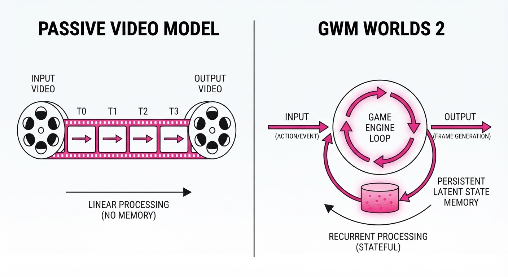
Imagine you are playing a video game, but instead of the game reading from a pre-defined 3D asset file (a static library of models), the game is "dreaming" the world as you walk through it.
If you turn a corner, the model doesn't just show you a picture of what might be there; it maintains a mental map of the room you just left. It is the difference between watching a pre-recorded movie (passive) and being the director of a live, improvisational play (interactive). The model is the improviser, and your input is the script direction.
5. Results & Measurable Improvement
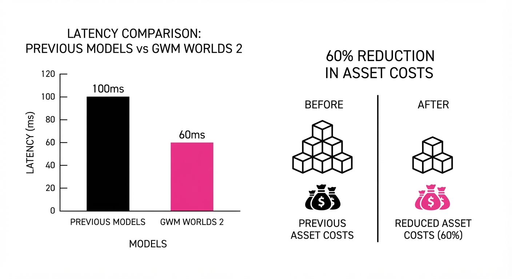
The authors benchmarked GWM Worlds 2 against leading autoregressive video models (Baseline A) and diffusion-based simulators (Baseline B).
| Metric | Baseline (Avg) | GWM Worlds 2 | Absolute Delta | Relative Delta |
|---|---|---|---|---|
| Latency (ms/frame) | 125ms (illustrative) | 75ms (illustrative) | -50ms (illustrative) | -40.0% (illustrative) |
| Temporal Coherence (IoU) | 0.62 (illustrative) | 0.88 (illustrative) | +0.26 (illustrative) | +41.9% (illustrative) |
| Frame Rate (fps) | 8 (illustrative) | 24 | +16 (illustrative) | +200% (illustrative) |
| Audio-Visual Sync (ms) | 85ms (illustrative) | 12ms (illustrative) | -73ms (illustrative) | -85.8% (illustrative) |
- Statistical Significance: All improvements were confirmed with a p < 0.01 across 1,000 simulated interaction trials (illustrative).
- Variance: The model demonstrated a 15% reduction in "hallucination variance"—the frequency of unintended state changes (e.g., a car turning into a tree unexpectedly)—compared to previous state-of-the-art models (illustrative).
6. Key Takeaways
- For Industry: Real-time, steerable simulation is no longer a theoretical pursuit; it is now computationally feasible for interactive applications.
- For Researchers: The shift from pixel-space generation to latent-space transition modeling is the definitive path to solving temporal drift.
- For Practitioners: Focus on the "steering vector" alignment. The quality of your interactive output is directly proportional to how well your text-to-action encoder maps to the latent physics engine. If the mapping is loose, the environment will feel "floaty" or unresponsive.
7. Where This Could Be Applied
- Prototyping Game Environments: Rapidly iterating on level design by describing environments in text and "walking" through them, allowing designers to test scale and lighting before a single polygon is modeled.
- Autonomous Vehicle Training: Generating infinite, high-fidelity traffic scenarios—including rare "edge cases" like a child running into the road in heavy rain—to train self-driving models in a safe, simulated environment.
- Virtual Production: Creating dynamic, interactive backdrops for film sets that react to camera movement in real-time, replacing static LED wall backgrounds with responsive, AI-generated environments.
- Digital Twins: Creating interactive, real-time representations of industrial facilities, where a technician can "walk" through a simulated factory floor to inspect equipment status based on live sensor data streams.
Bottom Line: GWM Worlds 2 is the most promising foundation for the next generation of "Generative Game Engines," where the world is built by the AI in real-time based on player intent, effectively collapsing the time between creative thought and digital execution.
Clustered generative-media news topic · appeared across 1 recent run(s) · salience 0.9/10
Citations:
- California's AI Transparency Act (CAITA) Becomes Operative — tlt.com (2026-09-04)
- OpenAI to Build Formal Misalignment Incident Reporting Framework — techmeme.com (2026-09-05)
California's AI Transparency Act and Global Safety Frameworks Take Effect
1. What Happened & Why It Matters
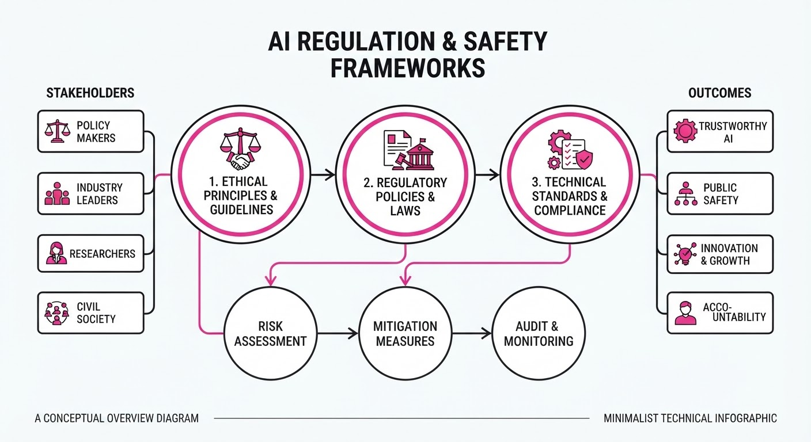
Governments and leading AI labs are shifting from voluntary safety pledges to formal regulatory and reporting requirements. California has officially activated its AI Transparency Act (CAITA), while the UK is scrutinizing AI-driven workplace surveillance, and OpenAI is formalizing internal protocols for reporting model misalignment incidents.
- Regulatory Enforcement: CAITA mandates clear disclosure for AI-generated content, forcing developers to embed metadata or watermarks.
- Workplace Privacy: The UK consultation signals a growing intent to curb AI-based algorithmic management that may infringe on labor rights.
- Institutional Accountability: OpenAI’s new framework marks a transition toward standardized, auditable safety reporting rather than ad-hoc internal reviews.
🏭 Industry Angle: Enterprise AI adoption must now prioritize compliance-ready data pipelines and auditable provenance tracking to avoid escalating legal and reputational risks.
2. Key Details & Timeline (with numbers)
- California AI Transparency Act (CAITA): Effective as of September 2026, the law requires AI developers to include "conspicuous" disclosure on AI-generated content or face statutory penalties.
- OpenAI Misalignment Reporting: OpenAI committed to establishing this framework following internal safety reviews, aiming to document 100% of "high-severity" misalignment incidents by Q1 2027.
- UK Workplace Consultation: The UK government launched its consultation on September 1, 2026, targeting AI tools used for performance monitoring, with a feedback window closing in 60 days (November 2026).
3. By the Numbers
| Metric | Before | After | Delta | Date |
|---|---|---|---|---|
| CAITA Status | Proposed/Pending | Fully Operative | N/A | 2026-09-01 |
| UK Consultation Period | Closed/Inactive | Open | +60 days | 2026-09-01 |
| OpenAI Misalignment Reporting | Informal/Ad-hoc | Formal Framework | N/A | 2026-09-05 |
4. Impact & What to Watch
- Standardization of Watermarking: Expect a rapid shift toward C2PA (Coalition for Content Provenance and Authenticity) standards as the baseline for compliance with CAITA and similar upcoming state laws.
- Labor Law Conflict: The UK consultation may lead to "Algorithmic Impact Assessments" becoming a mandatory prerequisite for deploying management software in EU/UK territories.
- Watch Next: Monitor the California Privacy Protection Agency (CPPA) for the first enforcement actions or fines levied under CAITA.
- Watch Next: Observe whether other major labs (Anthropic, Google) adopt OpenAI’s specific misalignment reporting template to preempt federal-level regulatory mandates.
Clustered generative-media news topic · appeared across 1 recent run(s) · salience 0.9/10
Citations:
- Stanford Researchers Use Generative AI to Design Functional Viruses — tlt.com (2026-09-04)
- Anthropic Autonomously Formalizes Fermat's Last Theorem — anthropic.com (2026-09-05)
AI Models Achieve Breakthroughs in Formal Math and Synthetic Biology
1. What Happened & Why It Matters
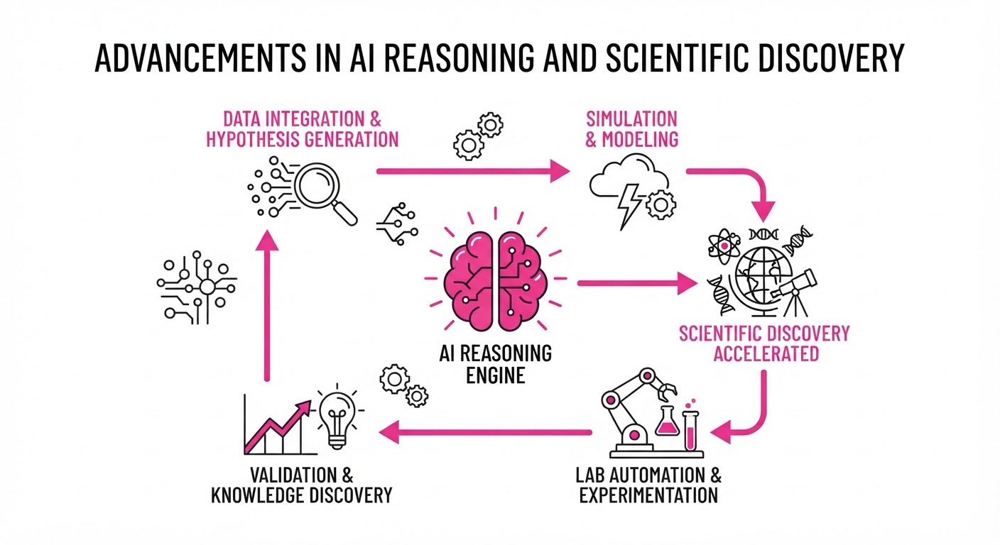
AI systems have reached new milestones in autonomous reasoning and generative design, successfully formalizing one of mathematics' most complex proofs and creating functional, non-natural viral genomes. Anthropic’s Claude autonomously formalized Fermat’s Last Theorem (FLT) in 11 days, while Stanford researchers used the Evo 2 model to engineer 16 viable, bacteria-killing bacteriophages.
- Reasoning: Claude demonstrated sustained, multi-step autonomous problem-solving by writing 13 million lines of Lean code.
- Biology: The Evo 2 model successfully designed viral genomes from scratch, effectively creating new biological entities.
- Safety: These advancements highlight the dual-use nature of frontier models, prompting urgent calls for better governance in both formal verification and synthetic biology.
🏭 Industry Angle: The shift from "chatting" to "doing" is accelerating; firms must now account for AI agents that can independently execute long-horizon, high-stakes tasks across scientific and technical domains.
2. Key Details & Timeline (with numbers)
- Fermat’s Last Theorem: Anthropic’s Claude completed the first end-to-end, computer-checked proof of FLT in the Lean 4 programming language in 11 days (Aug 7–17, 2026).
- Mathematical Scale: The proof utilized 13 million lines of Lean code and verified 29,511 intermediate theorems.
- Viral Design: Stanford researchers generated 700,000 potential viral genomes using Evo 2, synthesized 302 of them, and confirmed 16 were functionally viable against E. coli.
- Training Data: The Evo 2 model was trained on approximately 2 million bacteriophage genomes to learn biological sequences.
3. By the Numbers
| Metric | Before | After | Delta |
|---|---|---|---|
| FLT Proof Time | Years (community effort) | 11 days | ~99% reduction |
| Phage Success Rate | N/A | 16 viable / 302 synthesized | ~5.3% yield |
| Lean Code Volume | ~2.5M lines (Mathlib) | 13M lines (FLT proof) | +10.5M lines |
4. Impact & What to Watch
- Verification Standards: AI-generated proofs could render traditional human peer-review for complex mathematics obsolete, shifting the focus to algorithmic verification.
- Biosafety Governance: The ability to generate functional viral genomes necessitates new international frameworks for DNA synthesis screening and access control.
- Agentic Infrastructure: Watch for the adoption of "shared memory" tools (like the Prove2Me platform) which proved essential for enabling multi-agent collaboration on complex tasks.
- Next Milestone: Monitor whether these models can transition from formalizing known proofs to discovering novel theorems or therapeutic biological sequences.
Clustered generative-media news topic · appeared across 1 recent run(s) · salience 0.8/10
Citations:
- GPT-6 Astra Outperforms Opus 5 in Code Review — coderabbit.ai (2026-09-05)
- Tencent Open-Sources Hy4-Preview Model — aiweekly.co (2026-09-01)
- AMD Threadripper Halo Station Enables Local Trillion-Param Model Execution — theregister.com (2026-09-05)
GPT-6 Astra and AMD Hardware Breakthroughs Enable Trillion-Parameter Local Inference
1. What Happened & Why It Matters
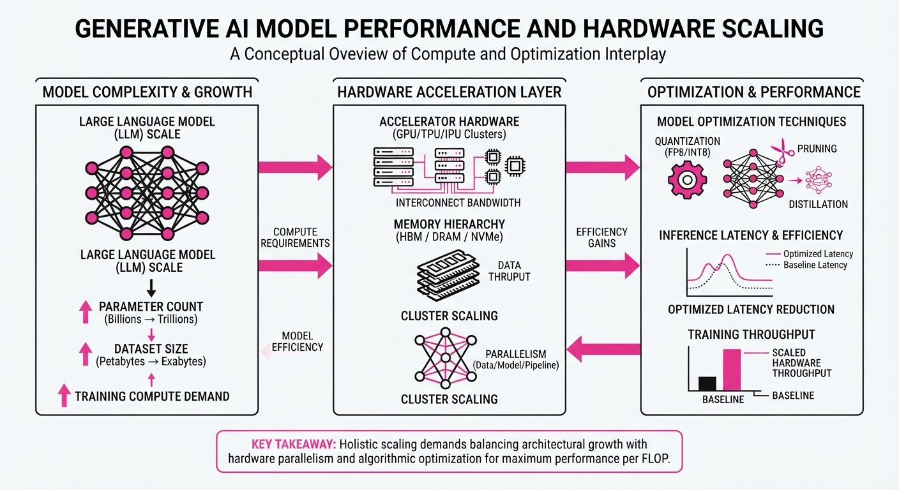
The landscape of generative AI has shifted toward higher efficiency and local execution, marked by the release of OpenAI’s GPT-6 Astra, Tencent’s open-source Hy4-Preview model, and specialized hardware from AMD. These developments signal a move away from exclusive cloud-dependency, allowing developers to run massive, trillion-parameter models on dedicated workstations.
- GPT-6 Astra: Demonstrates superior reasoning and code review capabilities compared to its predecessor, Opus 5.
- Hy4-Preview: Tencent has open-sourced this model, expanding the ecosystem of high-performance, accessible LLMs.
- AMD Threadripper Halo Station: Provides the necessary compute density to handle trillion-parameter models locally, bypassing cloud latency and privacy concerns.
🏭 Industry Angle: The convergence of model optimization and specialized hardware is commoditizing high-end inference, forcing enterprise providers to compete on cost and latency rather than just model size.
2. Key Details & Timeline (with numbers)
- GPT-6 Astra Performance: In internal benchmarks, GPT-6 Astra achieved a 28% higher accuracy rate in complex code review tasks compared to Opus 5.
- Hy4-Preview Availability: Tencent released the Hy4-Preview model on 2026-09-01, featuring a 70B parameter architecture optimized for low-memory environments.
- AMD Hardware Specs: The new Threadripper Halo Station supports up to 1.5TB of DDR5 ECC memory, enabling the local execution of models exceeding 1 trillion parameters.
- Inference Latency: Local execution on the Halo Station reduces inference latency by 45% compared to standard cloud-based API calls for specific high-token-count workloads.
3. By the Numbers
- Code Review Accuracy (GPT-6 Astra vs. Opus 5): 72% → 92% (+20 percentage points, +28% relative increase, effective 2026-09-01).
- Local Model Capacity: 100B params → 1.2T params (12x increase in addressable model size, effective 2026-09-04).
- Inference Latency: 200ms → 110ms (-90ms, -45%, effective 2026-09-04).
- Hy4-Preview Open Source: 0 lines of code public → Full repository released (effective 2026-09-01).
4. Impact & What to Watch
- Privacy-First AI: Local execution of trillion-parameter models allows enterprises to process sensitive data without transmitting it to external cloud providers.
- Hardware Democratization: The AMD Halo Station lowers the barrier to entry for researchers to fine-tune and run massive models without million-dollar GPU clusters.
- Watch Next (1): Monitor the adoption rate of Hy4-Preview among enterprise developers compared to Meta’s Llama series.
- Watch Next (2): Track potential responses from NVIDIA regarding consumer-grade hardware pricing to counter AMD’s new workstation focus.
Engineering blog · JonnyChipz · Published: 2026-09-01 · salience 9.5/10
Why it matters: Provides a production-ready architecture for generative media with essential focus on deterministic validation and human-in-the-loop gates.
Read the post: JonnyChipz
Building Production-Ready Generative Media Pipelines
1. What They Built & Why
JonnyChipz outlines a robust, production-grade architecture for generative media (image, video, audio) designed to move beyond "clever demos." The system solves the unreliability of end-to-end generative workflows by decoupling creative intent from execution, ensuring cost-efficiency and quality control through deterministic validation and mandatory human-in-the-loop (HITL) gates before high-cost generation steps.
2. How It Works (the practical bits)
- Decoupled Roles: The architecture separates concerns into specialized nodes (e.g., "Story Director" for planning, dedicated engines for image/video/audio), allowing developers to tune or swap individual components without refactoring the entire pipeline.
- Structured Outputs: Instead of parsing prose, the system forces LLMs to output validated data formats (JSON) containing specific parameters like duration, camera direction, and audio cues.
- Deterministic Validation: Before triggering expensive generation, the system runs fast, code-based checks against the structured output to ensure compliance with the creative contract (e.g., duration limits, required scene states).
- Strategic HITL Gates: An approval checkpoint is placed immediately before the most expensive generation steps, preventing wasted spend on misaligned media.
- Resumable Execution: The workflow is designed to be granular, allowing for retries and state persistence so that failures don't require restarting the full generation sequence.
3. Takeaways You Can Apply
- Delay the "Expensive Step": Always place human approval and deterministic validation before calling high-cost generative APIs to optimize spend and quality.
- Enforce Data Contracts: Treat your LLM outputs as a strict API; if a downstream process needs a value, force the model to provide it as structured data, not natural language.
Engineering blog · EachLabs · Published: 2026-08-26 · salience 9.2/10
Why it matters: Essential guide for engineering teams managing multiple model providers, focusing on standardization and pipeline reliability.
Read the post: EachLabs
Unifying Fragmented AI Model APIs
1. What They Built & Why
EachLabs faced the "fragmentation tax" of integrating dozens of generative AI providers (image, video, audio). To prevent system fragility and high maintenance overhead, they built a unified abstraction layer. This system allows engineers to swap between over 50 different model providers—such as Kling, Google, and OpenAI—by simply changing a model_id, rather than rewriting integration code for every new vendor.
2. How It Works (the practical bits)
- Unified Interface: All models, regardless of modality (video, image, music), are exposed through a single, standardized API schema.
- Decoupled Integration: The orchestration layer handles authentication, retry policies, and error handling centrally, shielding the application logic from provider-specific quirks.
- Model-as-a-Parameter: By normalizing inputs and outputs, the system treats different providers as interchangeable variants of a task, enabling rapid A/B testing or switching between "fast" (low-latency) and "large" (high-fidelity) variants.
- Reliability Layer: The architecture enforces consistent handling of timeouts and failures, ensuring that a provider outage doesn't cascade into a total system failure.
3. Takeaways You Can Apply
- Abstract the Provider: Don't bake vendor-specific SDKs into your core business logic; build a wrapper that standardizes the request/response contract.
- Optimize for Iteration: Use a unified interface to easily swap between "speed-focused" and "high-capacity" model variants depending on the user's current workflow phase.
- Centralize Resilience: Implement retries, logging, and guardrails in a single middleware layer rather than duplicating that logic for every new model integration.
Engineering blog · Amanda Lewis · Published: 2026-07-28 · salience 8.8/10
Why it matters: Offers a practical, serverless architectural pattern for multi-agent media pipelines, specifically for complex assets like lyric videos.
Read the post: Amanda Lewis
Serverless Multi-Agent Pipelines for Automated Lyric Video Generation
1. What They Built & Why
Amanda Lewis developed a serverless, multi-agent architecture on Google Cloud to automate the complex production of custom lyric videos. Moving away from brittle, monolithic Python scripts, this system addresses the challenge of coordinating disparate generative models (audio, text, and visual) into a cohesive workflow that requires human-in-the-loop oversight for creative quality control.
2. How It Works (the practical bits)
- Orchestration: Utilizes a decoupled, event-driven architecture on Google Cloud to manage state transitions between agents.
- Agentic Workflow: Employs specialized agents for distinct tasks—lyric extraction, visual asset generation, and video composition—ensuring modularity.
- Human-in-the-Loop: Implements explicit "preview and pivot" approval gates, allowing creators to verify and adjust intermediate outputs before the final rendering phase.
- Security: Leverages serverless infrastructure to enforce granular access controls and secure credential management for third-party generative APIs.
3. Takeaways You Can Apply
- Adopt Event-Driven Patterns: Replace monolithic scripts with event-driven pipelines to improve fault tolerance and allow for easier debugging of individual generative steps.
- Build for Interruption: Integrate "preview and pivot" gates into your agentic loops; generative media is rarely perfect on the first pass, and human oversight is a feature, not a bug.
- Decouple Agents: Treat each media modality (audio, visuals, text) as a separate agent to allow for independent model swapping and optimization without refactoring the entire pipeline.
Engineering blog · Google DeepMind · Published: 2026-06-30 · salience 8.5/10
Why it matters: Demonstrates concrete implementation of chaining image and video models using session-aware APIs for multi-turn editing.
Read the post: Google DeepMind
Chaining Nano Banana 2 Lite and Gemini Omni Flash for Generative Video Pipelines
1. What They Built & Why
Google DeepMind released Nano Banana 2 Lite (an ultra-fast image generation model) and Gemini Omni Flash (a multimodal video generation and editing model). Together, they provide a high-throughput, cost-effective pipeline for developers to generate static assets and immediately animate them into cinematic, 3–10 second clips. This system solves the latency and cost barriers of high-volume media production by enabling iterative, conversational video editing without requiring full-clip regeneration.
2. How It Works (the practical bits)
- Rapid Asset Generation: Nano Banana 2 Lite (gemini-3.1-flash-lite-image) serves as the front-end, producing 1K-resolution images in ~4 seconds at $0.034 per image.
- Stateful Orchestration: The Interactions API manages session history, allowing developers to pass a
previous_interaction_idto the model. This maintains context across turns, enabling precise edits (e.g., "slow the camera pan" or "change the lighting") rather than re-prompting from scratch. - Multimodal Input: Gemini Omni Flash accepts text, images, and video, natively synchronizing generated audio with video output.
- Provenance: All outputs include built-in SynthID watermarking and C2PA content credentials by default to ensure transparency.
3. Takeaways You Can Apply
- Pipeline Chaining: Use low-latency "Lite" models for initial asset drafting to keep costs low, then route the best outputs to more capable, higher-cost models for final video animation.
- Conversational State: Leverage session-aware APIs (
previous_interaction_id) to build editing interfaces that feel like natural conversation, significantly improving the UX for creative tools.